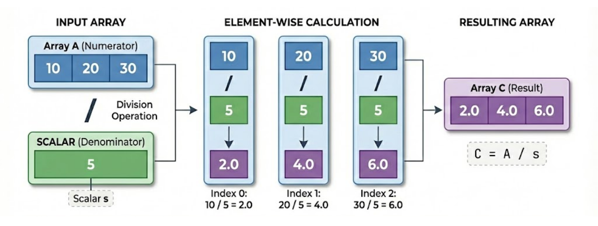
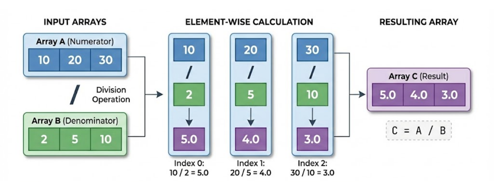
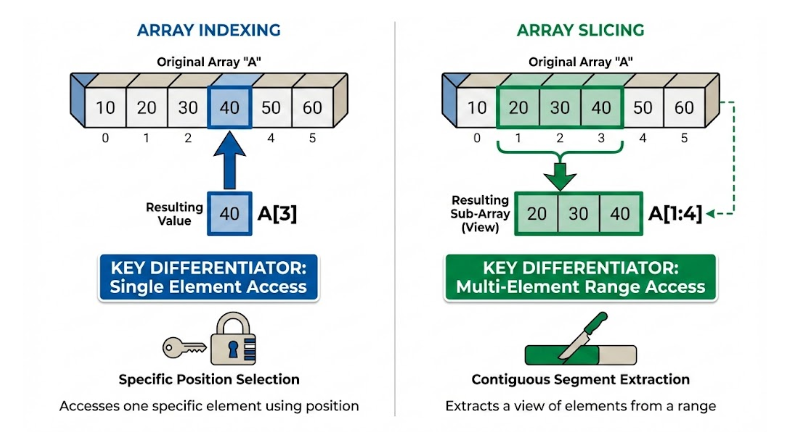

Chapter 2: Working with NumPy for Medical Data#
1. Introduction#
Welcome to the core of data manipulation with NumPy. In precision health, raw data is rarely in its final, analyzable form. We constantly need to perform calculations, correct entries, and isolate specific information from large datasets. For instance, a researcher might need to convert units across thousands of lab results, select patients who meet specific criteria for a clinical trial, or extract a single patient’s vital signs from a large monitoring log.
This section provides the fundamental tools for these tasks. We will explore how to perform mathematical operations on entire arrays at once and master the techniques of indexing, slicing, and conditional filtering. By the end of this section, you will be able to efficiently select, modify, and filter data in NumPy arrays, turning raw clinical data into actionable insights.
2. Key Concepts and Definitions#
Understanding these core terms is essential for effective data manipulation in NumPy.
Element-wise Operation: A mathematical operation that applies to each element of an array independently and simultaneously. In a medical context, this is like applying a dosage formula (e.g., mg/kg) to an array of patient weights to calculate the correct dose for each person in a single step.
Scalar: A single numerical value (as opposed to a collection of values, like an array). When you perform an operation between an array and a scalar, the operation is broadcast across every element of the array. An example is converting an array of temperatures from Celsius to Fahrenheit by multiplying all values by 1.8 and adding 32.
Indexing: Accessing individual elements in an array using their numerical position (e.g.,
array[0]for the first element). This is analogous to pulling a specific patient’s file from a cabinet by its unique chart number.Slicing: Extracting a subsection (a new, smaller array) from an array using a range of indices (e.g.,
array[2:5]). In clinical data analysis, you might slice a time-series array of heart rate data to isolate all readings recorded between 9 AM and 12 PM.Boolean Masking (Conditional Indexing): A powerful filtering method that uses a boolean (
True/False) array to select elements from another array. This is the primary tool for cohort selection, such as creating a new array containing only patients with a blood pressure reading above a certain threshold.
3. Main Content#
This section covers the primary techniques for working with data inside NumPy arrays.
3.1 Element-wise Operations#
Element-wise operations apply a mathematical function to every element in an array simultaneously, which is ideal for batch processing tasks like converting units for a large set of lab results.
Medical Background: In medical research and hospital administration, you often work with massive datasets containing thousands or even millions of data points (e.g., patient records from an entire hospital system or results from a large clinical trial). Element-wise operations are computationally efficient because they are performed by highly optimized, low-level code. This allows you to perform calculations on entire datasets almost instantly, a process that would be extremely slow using standard Python loops.
Operation with a Scalar#
In the world of linear algebra and NumPy, a scalar is just a fancy word for a single number.
Array/Vector: A collection of numbers (e.g., [154.3, 176.4, 132.3]).
Scalar: Just one number standing alone (e.g., 2.205).

Image generated using Nano Banana Pro from Gemini 3import numpy as np
# Patient weights in pounds (lbs)
weights_lbs = np.array([154.3, 176.4, 132.3, 201.7])
# Convert all weights to kilograms (kg)
weights_kg = weights_lbs / 2.205
print(np.round(weights_kg, 2))
# Output: [69.98 80. 60. 91.47]
Try it yourself: Modify the code above or write your own version
# TODO: Write your code here
# Hint: Try modifying the example above
Operation Between Two Arrays#
The division (
/) operator applies to each element individually, creating a new array of results.

Image generated using Nano Banana Pro from Gemini 3import numpy as np
# Patient heights (m) and weights (kg)
heights_m = np.array([1.78, 1.65, 1.88, 1.59])
weights_kg = np.array([75.2, 61.4, 92.1, 55.8])
# Calculate Body Mass Index (BMI) for all patients: BMI = weight (kg) / height (m)^2
bmi_values = weights_kg / (heights_m ** 2)
print(np.round(bmi_values, 2))
# Output: [23.73 22.5 26.02 22.11]
Try it yourself: Modify the code above or write your own version
# TODO: Write your code here
# Hint: Try modifying the example above
Standard operators (
+,-,*,/) are applied element-wise between arrays of the same shape.Note: A BMI of 18.5-24.9 is a healthy weight range.
Important: For element-wise operations between two arrays to work, the arrays must have the same shape. A
ValueErrorwill occur if their shapes are different. In a clinical setting, this could happen if a patient’s height is recorded but their weight is missing, leading to misaligned data. Always ensure your datasets are clean and correctly aligned before performing calculations.
3.2 Array Indexing and Slicing#
Use indexing and slicing to isolate a specific patient’s lab results or to correct an erroneous data point in a clinical dataset.

Image generated using Nano Banana Pro from Gemini 3Indexing and Modifying 1D Arrays#
import numpy as np
# Hourly heart rate measurements in beats per minute (bpm)
heart_rates = np.array([72, 75, 81, 85, 79, 74])
# Get the second reading (index 1)
second_reading = heart_rates[1]
print(f"Second reading: {second_reading}")
# Output: Second reading: 75
# Get rates from the 3rd to the 5th hour (indices 2, 3, 4)
subset_rates = heart_rates[2:5]
print(f"Subset: {subset_rates}")
# Output: Subset: [81 85 79]
# Correct the third reading, which was entered incorrectly
heart_rates[2] = 80
print(f"Corrected rates: {heart_rates}")
# Output: Corrected rates: [72 75 80 85 79 74]
Try it yourself: Modify the code above or write your own version
# TODO: Write your code here
# Hint: Try modifying the example above
Access single elements by index (
array[1]). Negative indices (array[-1]) count from the end.Select a range of elements with a slice (
array[2:5]). The start is inclusive and the stop is exclusive.Modify an element by assigning a new value to its index (
array[2] = 80).
Indexing 2D Arrays#
import numpy as np
# Vitals for 3 patients: [Heart Rate (bpm), Temperature (°C)]
vitals = np.array([[72, 37.1], [85, 38.5], [68, 36.8]])
# Get the temperature of the second patient (row 1, column 1)
patient_2_temp = vitals[1, 1]
print(f"Patient 2 Temp: {patient_2_temp}")
# Output: Patient 2 Temp: 38.5
# Get all heart rate readings (all rows, column 0)
all_heart_rates = vitals[:, 0]
print(f"All Heart Rates: {all_heart_rates}")
# Output: All Heart Rates: [72 85 68]
# Get all vitals for the second patient (row 1)
patient_2_vitals = vitals[1]
print(f"Patient 2 Vitals: {patient_2_vitals}")
# Output: Patient 2 Vitals: [85. 38.5]
Try it yourself: Modify the code above or write your own version
# TODO: Write your code here
# Hint: Try modifying the example above
Use
[row, column]to select a specific element. Use a colon (:) to select an entire row or column.vitals[1]is a shortcut forvitals[1, :], selecting the entire row.When an operation or slice creates an array that would otherwise contain mixed data types (like integers and floats), NumPy promotes all elements to the more general type. For instance, integers like
85are converted to floats like85.0to ensure the entire array has a single, consistentfloatdata type.
In Practice: Selecting a row (e.g.,
vitals[1]) is like pulling a single patient’s chart to get a complete snapshot of their vitals at one point in time. Selecting a column (e.g.,vitals[:, 0]) is like running a report on a single measurement (like heart rate) across all patients in a ward to analyze overall trends or identify outliers.
Debug Note: A common error is
IndexError: index is out of bounds. This happens when you try to access an index that doesn’t exist. For example, ifheart_rateshas 6 elements (indices 0-5),heart_rates[6]will cause this error. Always double-check the size of your array (array.shape) before indexing.
3.3 Conditional Indexing#
Conditional indexing, also known as Boolean masking, filters an array by selecting elements that meet a boolean condition.
import numpy as np
# Temperatures (°C) for patients in a ward
temperatures = np.array([37.1, 38.5, 36.8, 38.1, 37.4, 37.9, 36.4, 39.1])
# Find patients with a mild fever (temperature greater than 37.5°C and up to/including 38.5°C)
mild_fevers = temperatures[(temperatures > 37.5) & (temperatures <= 38.5)]
print(f"Mild Fevers: {mild_fevers}")
# Output: Mild Fevers: [38.5 38.1 37.9]
# Find temperatures outside a typical range (e.g., below 36.5°C or above 38.5°C)
abnormal_temps = temperatures[(temperatures < 36.5) | (temperatures > 38.5)]
print(f"Abnormal Temps: {abnormal_temps}")
# Output: Abnormal Temps: [36.4 39.1]
Try it yourself: Modify the code above or write your own version
# TODO: Write your code here
# Hint: Try modifying the example above
A boolean expression like
temperatures > 37.5creates aTrue/Falsemask to filter the array, selecting onlyTrueelements.
Important: When combining boolean conditions in NumPy, you must use the bitwise operators
&for AND and|for OR. The standard Python keywordsandandorwill not work and will raise aValueError. Also, ensure each condition is wrapped in its own set of parentheses to guarantee the correct order of operations.
Reflection Moment: Besides temperature, what other clinical measurements could you filter using boolean masking to identify at-risk patients? Consider scenarios involving blood pressure, oxygen saturation, or lab results.
4. Practice Exercises#
Apply your knowledge with these hands-on exercises. You are given two NumPy arrays of patient data to use.
import numpy as np
# Ages of patients in a study group
patient_ages = np.array([25, 42, 19, 55, 31, 64, 28])
# Vitals for 4 patients: [Systolic Blood Pressure (BP) (mmHg), Diastolic BP (mmHg), Oxygen Saturation (SpO2) (%)]
patient_vitals = np.array([[120, 80, 98],
[145, 92, 96],
[110, 70, 99],
[130, 85, 97]])
Exercise 1: 1D Array Manipulation Basic#
Objective: Practice element-wise operations, indexing, slicing, and filtering on a 1D array. Time: 5 minutes Medical Context: Managing demographic data for a patient cohort.
Perform the following tasks using the patient_ages array:
Create a new array called
ages_in_a_decadeshowing each patient’s age in 10 years.Extract the age of the fourth patient.
Create a sub-array containing the ages of the second through the fifth patients.
Create a new array containing only the ages of patients eligible for a senior-specific study (age > 50).
📝 Your Solution:
# TODO: Write your solution here
# Hint: Check the task description above
🔍 Click to reveal solution
Solution
import numpy as np
patient_ages = np.array([25, 42, 19, 55, 31, 64, 28])
# 1. Create ages_in_a_decade
ages_in_a_decade = patient_ages + 10
print(f"Ages in a decade: {ages_in_a_decade}")
# Output: Ages in a decade: [35 52 29 65 41 74 38]
# 2. Extract the age of the fourth patient (index 3)
fourth_patient_age = patient_ages[3]
print(f"Fourth patient's age: {fourth_patient_age}")
# Output: Fourth patient's age: 55
# 3. Create a sub-array from the second to fifth patients (indices 1 to 4)
age_subset = patient_ages[1:5]
print(f"Age subset: {age_subset}")
# Output: Age subset: [42 19 55 31]
# 4. Filter for senior study eligibility (age > 50)
senior_ages = patient_ages[patient_ages > 50]
print(f"Senior study ages: {senior_ages}")
# Output: Senior study ages: [55 64]
Explanation: This exercise uses a scalar addition for element-wise calculation, single-item indexing [3], slicing [1:5] to get a range, and boolean masking [patient_ages > 50] to filter data based on a condition.
Key Learning: Basic operations, indexing, slicing, and filtering are the foundational tools for manipulating 1D arrays.
Exercise 2: 2D Array Indexing and Slicing Intermediate#
Objective: Practice extracting specific rows, columns, and elements from a 2D array. Time: 5 minutes Medical Context: Accessing specific measurements from a patient vitals chart.
Perform the following tasks using the patient_vitals array:
Extract the SpO2 level (column 2) for the third patient (row 2).
Extract all data for the second patient (row 1).
Extract just the systolic BP column (column 0) for all patients.
📝 Your Solution:
# TODO: Write your solution here
# Hint: Check the task description above
🔍 Click to reveal solution
Solution
import numpy as np
patient_vitals = np.array([[120, 80, 98], [145, 92, 96], [110, 70, 99], [130, 85, 97]])
# 1. Extract SpO2 for the third patient
patient3_spo2 = patient_vitals[2, 2]
print(f"Patient 3 SpO2: {patient3_spo2}")
# Output: Patient 3 SpO2: 99
# 2. Extract all data for the second patient
patient2_data = patient_vitals[1] # or patient_vitals[1, :]
print(f"Patient 2 Data: {patient2_data}")
# Output: Patient 2 Data: [145 92 96]
# 3. Extract the systolic BP column for all patients
systolic_bp = patient_vitals[:, 0]
print(f"All Systolic BP: {systolic_bp}")
# Output: All Systolic BP: [120 145 110 130]
Explanation: This exercise uses [row, column] syntax for specific elements, [row] for entire rows, and [:, column] for entire columns. The colon : acts as a wildcard, selecting all items along that axis.
Key Learning: 2D indexing is crucial for isolating specific data points (a single vital), patient records (rows), or measurement types (columns) from a clinical dataset.
Exercise 3: Advanced Conditional Filtering Advanced#
Objective: Use a condition based on one column to filter and extract data from another column. Time: 5 minutes Medical Context: Identifying secondary health metrics for a subgroup of patients defined by a primary condition (e.g., finding the oxygen saturation of patients with high blood pressure).
Perform the following tasks using the patient_vitals array:
First, create an array of systolic BPs (column 0).
Using this array, create a new array called
high_bpcontaining only systolic pressures greater than 140 mmHg.Pro Tip: This final task requires a powerful technique where you use a boolean mask created from one set of data (systolic BP) to filter a different but corresponding set of data (SpO2 levels). This allows you to answer questions like, “What are the oxygen levels for all patients who have high blood pressure?” Extract the SpO2 levels (column 2) for only the patients who have high systolic BP (systolic BP > 140 mmHg).
📝 Your Solution:
# TODO: Write your solution here
# Hint: Check the task description above
🔍 Click to reveal solution
Solution
import numpy as np
patient_vitals = np.array([[120, 80, 98], [145, 92, 96], [110, 70, 99], [130, 85, 97]])
# 1. Create an array of systolic BPs
systolic_bp = patient_vitals[:, 0]
# 2. Create a new array with pressures > 140 mmHg
high_bp = systolic_bp[systolic_bp > 140]
print(f"High BP readings: {high_bp}")
# Output: High BP readings: [145]
# 3. Extract SpO2 levels for patients with high BP
# Create the boolean mask first
high_bp_mask = patient_vitals[:, 0] > 140
# Use the mask to filter the rows, then select column 2
high_bp_spo2 = patient_vitals[high_bp_mask, 2]
print(f"SpO2 for high BP patients: {high_bp_spo2}")
# Output: SpO2 for high BP patients: [96]
Explanation: This advanced technique first creates a boolean mask (high_bp_mask) based on a condition in one column (patient_vitals[:, 0] > 140). This mask, which identifies the rows meeting the condition, is then used to filter the original patient_vitals array and select the corresponding values from a different column (column 2).
Key Learning: Boolean masks can be created from one part of an array and applied to another, enabling complex, cross-column queries on structured data.
5. Practical Applications#
The techniques learned in this section are directly applicable to many real-world precision health scenarios.
Pharmacogenomics Data Analysis: A researcher might have a large array where rows represent patients and columns represent the presence of specific genetic markers and their response to a drug. Using boolean masking, they can instantly filter this dataset to isolate all patients who have marker
Xand a positive drug response, allowing for targeted analysis.Real-time ICU Patient Monitoring: An ICU system logs patient vitals (heart rate, blood pressure, SpO2) every minute into a large NumPy array. A clinician can use slicing to grab the last 15 minutes of data (
vitals[-15:, :]) and conditional indexing to flag any instance where SpO2 dropped below 90% (vitals[:, 2] < 90), triggering an alert.Clinical Trial Cohort Selection: When recruiting for a clinical trial, researchers need to find patients meeting strict criteria from a database of thousands. With patient data in a NumPy array, they can build a complex boolean mask to find patients who are
(age > 50) & (bmi < 25) & (systolic_bp > 130), efficiently identifying the eligible cohort.Medical Imaging Post-Processing: In an MRI scan represented as a 3D NumPy array of pixel intensities, a radiologist might apply an element-wise operation to increase the contrast of the entire image, making it easier to spot anomalies. They could also use indexing to zero-out (modify) artifacts in the image caused by patient movement.
6. Summary and Key Takeaways#
In this section, we’ve explored the essential NumPy techniques for manipulating array data. We started with element-wise arithmetic for batch calculations and moved to the precise arts of indexing and slicing for data extraction. Finally, we unlocked the power of boolean masking for conditional filtering, a cornerstone of data analysis.
Element-wise operations allow you to apply calculations to entire arrays at once, saving time and code.
Indexing (
array[i],array[r, c]) is used to access or modify individual data points, like correcting a single erroneous entry in a patient’s chart.Slicing (
array[start:stop]) is perfect for extracting ranges of data, such as isolating a specific time window from a continuous monitoring feed.Boolean masking (
array[condition]) is the most powerful tool for filtering data and selecting cohorts based on complex criteria, which is fundamental to clinical research and diagnostics.
Mastering these operations is crucial for preparing any dataset for analysis. In the next section, we will build on these skills to perform statistical analysis and derive meaningful summaries from our clinical data.